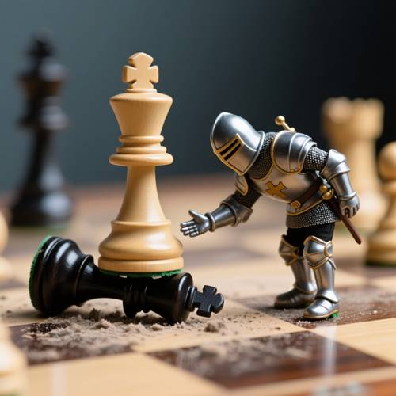
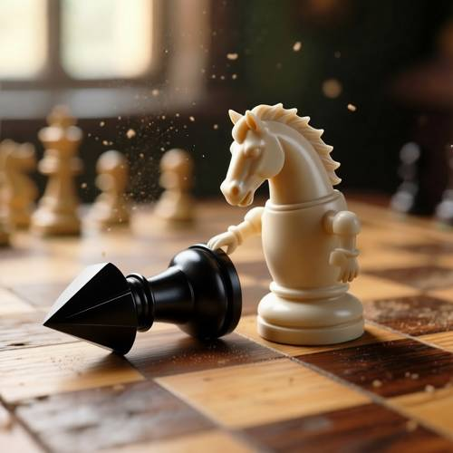
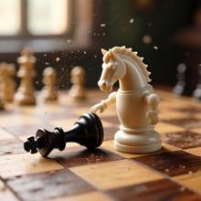
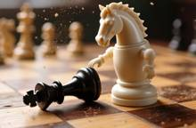
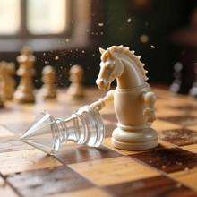
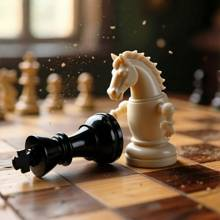

Compound — Under the macro lens, a knight chess piece, like a real gentleman, is
Under the macro lens, a knight chess piece, like a real gentleman, is bending down and stretching out his small hand, trying to lift up the fallen black bishop, with a dusty chessboard in the background.

Direct — one call, no iteration

Continuum — Qwen3.8-27B + Qwen-Image
Judge — Direct
FAILCompound - Imagination — The image features a small figurine of a knight in armor on a chessboard. The knight is bent over and extending a hand toward a fallen black chess piece. This fulfills the imaginative concept of an animated piece offering help. However, the fallen piece is a black king, identifiable by the cross on its top, not a black bishop as specified in the prompt.
PASSRelationship - Similarity — The image shows a figurine of a knight performing an action associated with a gentleman. The figurine is bending down and extending an open hand toward a fallen piece, a gesture of offering help, which visually represents the similarity to a "real gentleman".
PASSAction - Full-body (Character/Anthropomorphic) — The image shows an anthropomorphic figurine of a knight. The figurine is bent forward from the waist, and its right arm is extended with an open hand, which accurately depicts the full-body action of "bending down and stretching out his small hand".
Judge — Continuum
PASSCompound - Imagination — The image depicts an impossible scene where a white knight chess piece is anthropomorphized with a torso, arms, and hands. It is shown bending forward and placing its hand on a fallen black bishop, appearing to try and lift it, an action that inanimate chess pieces cannot perform in reality.
PASSRelationship - Similarity — The image shows a white knight chess piece that has been anthropomorphized to have a human-like upper body. It is positioned as if it is performing the gentlemanly action of bending down to help up the fallen black bishop.
PASSAction - Full-body (Character/Anthropomorphic) — The image shows an anthropomorphized white knight chess piece. Its upper body is bent forward from its base, and its right arm is stretched out, with its hand resting on the fallen black bishop piece.
What the agent did
Thinking
Let me break down this prompt: - Macro lens perspective (shallow depth of field, close-up) - A knight chess piece (horse head) is bowing and extending its small hand - It's trying to lift up a fallen black bishop - The knight is "like a real gentleman" — a refined, courteous attitude - In the background, a dusty chessboard So this is a whimsical/anthropomorphic chess scene. The knight needs to have an arm/hand (an anthropomorphized knight). It's crouching down, extending its little hand toward the fallen bishop (bishop lying on the board, black color). Let me generate the first image with qwen-image, at an appropriate size. Macro photography style, shallow depth of field, dusty chessboard in the background. Let me write a detailed prompt: "Macro lens close-up photograph, an anthropomorphized white knight chess piece with delicate human arms, like a polite gentleman, crouching and bowing gracefully, extending its small hand to lift a fallen black bishop chess piece lying on its side on the board. Shallow depth of field, soft bokeh, a weathered wooden chessboard with dust and dust motes floating in the light, warm cinematic lighting, photorealistic, whimsical storybook mood." Wait — "fallen black bishop" — the bishop is black (the black piece). The knight — is it white or a specific color? The prompt just says "knight chess piece." Let's make the knight a white/cream piece for contrast, or maybe keep it neutral. Actually, for contrast, a white knight lifting a black bishop works well. Let me generate. Size: probably 1024x1024 (default). Macro lens scene — could also be landscape 1344x768? The default is 1024x1024. The harness controls size. Let's leave it at default. Actually, I could use 1024 width x 768 height for a cinematic macro shot. But the policy says "size and seed are controlled by the harness" — meaning I shouldn't set the size. Use default 1024x1024? Hmm, "don't set the seed. Size and seed are controlled by the harness" — I think this means don't fiddle with them, so use the defaults. Let's leave the width/height at default. Let me generate.
Step 1 — `generate_image`
{
"prompt": "Macro lens photograph, shallow depth of field: an anthropomorphic white knight chess piece with tiny human arms, dignified like a gentleman, bending down at the waist and stretching out one small hand, gently trying to lift a fallen black bishop chess piece that lies on its side on the square. The knight is crouched politely over the bishop. Weathered wooden chessboard squares stretch into soft bokeh behind them, dust particles floating in warm shafts of window light, fine dust on the board's grain, cinematic warm lighting, photorealistic, whimsical storybook mood, ultra-detailed close-up.",
"model": "qwen-image"
}
Result img_0
Thinking
Interesting result. The image shows an anthropomorphized white knight figure, but it's not a knight (horse head) chess piece — it's a knight in full plate armor (a human warrior with a helmet, plume, and armor). The prompt said "a knight chess piece" — meaning the chess piece itself (a knight with a horse head) that has small arms and is leaning over. The generated figure is a human figure in knight's armor, not a chess piece. Also, the fallen piece: it's lying on its side — looks like a black bishop? Actually it looks more like a black rook or bishop... The top part looks like a flat base with something attached... let me look more closely. The fallen piece is black, lying horizontally. The far end (left) appears to have a cross-like or slanted shape — could be a bishop's mitre, or could be a pawn. Hard to tell. Let me use inspect_region to check the fallen piece. Main issues: 1. The "knight" is a human figure in armor, not a knight chess piece with a horse head. 2. Need to verify the identity of the fallen piece (bishop). Let me zoom in on the fallen piece.
Model
The first pass is close in spirit, but the "knight" is a full human figure in armor rather than a knight *chess piece* (horse head). Let me inspect the fallen piece to confirm its identity before fixing.
The fallen piece in the first crop shows a black chess piece lying on its side, but the head portion is cut off in my crop. Let me get a better crop of the whole fallen piece, including its head (the left end where the cross/miter is). The second crop shows a white figure with a feathered plume on top of the helmet—confirming it's a human knight figure, not a horse-head chess piece. The main problem: the prompt asks for "a knight chess piece"—an actual chess piece in the shape of a knight (horse head), with arms and legs attached, bending down. The current image shows a human figure wearing knight's armor. This is a fundamental mismatch. I should fix this. Options: 1. Use edit_image with a targeted instruction: "Replace the armored human figure with a white knight chess piece—a piece in the shape of a horse head with small arms and legs—so that the head is the carved head of a chess knight." 2. Regenerate from scratch with a better prompt. Editing approach: the figure is central and complex. edit_image might be able to morph it. But turning a fully human armored figure into a horse-head chess piece is a big structural change—regenerating might be cleaner. That said, the composition, lighting, dust, and board are all great. Let me try edit_image first with a clear instruction to change the figure into a horse-head chess piece, keeping the pose and everything else. Also, check the fallen piece: is it a bishop? Let me get a better crop of the whole fallen piece.
Model
The plume confirms it's a human armored figure, not a horse-head chess piece. Let me also verify the fallen piece's head shape.
My crop is off — the head of the fallen piece (with the cross/mitre shape) is around x=100-160, y=580-650 in the original image. In the first full view, the left end of the fallen piece, near coordinates (100-160, 580-660), has a shape that looks like a small cross or mitre. In the full image, the fallen piece extends from about x=100 to x=420, y=550-650. The left end (x~100-160) showed a cross-like shape, which might be a bishop's mitre viewed from the side, or a pawn… Actually, in the first image, at the left end of the fallen piece I can see what looks like a small cross with a flared base — this is consistent with a bishop (the slit in the mitre), or possibly a queen. Rather than spending more steps on cropping, let me note the key issues: 1. The standing figure must be a knight chess piece with a horse's head — the biggest mismatch. 2. The fallen piece should clearly be a bishop (mitre). For issue 1, I'll try edit_image on img_0 with a specific change: replace the human knight in armor with a carved white knight chess piece (horse head, horse neck) with a small arm extending its hand. This is a big structural change, but the edit model might be able to handle it. As an alternative, I could regenerate with a clearer prompt that explicitly states "knight chess piece, horse head". Given that the composition/lighting/dust are good, I'll try edit_image first. The prompt will be in delta form: "Replace the human figure in white armor with a white knight chess piece in the shape of a horse: a carved horse head and neck with a small mane, two small arms extending downward, one small hand reaching to lift a fallen black bishop; keep the pose, board, lighting, and dust unchanged." Let's try that.
Model
The fallen piece reads as a bishop from the full view. The core mismatch is the standing figure. I'll edit it to become an actual knight chess piece (horse head) while keeping the excellent composition, lighting, and dust.
Step 6 — `edit_image`
{
"image": "img_0",
"model": "qwen-image",
"prompt": "Replace the human figure in white armor with a white knight chess piece shaped like a horse: a carved horse head with a flared mane as the top of the piece, a smooth rounded horse body base, and two tiny sculpted arms growing from the side, one small hand still reaching down to the fallen black bishop. Keep the exact same crouching pose, the fallen black bishop, the chessboard, the warm light, the floating dust, and the shallow depth of field unchanged."
}
Result img_5

Thinking
Big improvement! Now it's actually a knight chess piece (horse head) with a small arm. Issues to check: 1. The knight is standing pretty upright, not really "bowing its head down" — it's more of a leaning posture. The head is horizontal, maybe tilted slightly downward. The prompt says "bending down" — a more bent-over, leaning-forward pose would be better. But it's within acceptable range, and one hand is reaching toward the bishop. 2. The fallen piece: the left end again shows a cross-shaped head... let me check. It looks like a black piece with a cross/mitre at the left end. Actually, it looks like the head of a pawn, or the head of a bishop lying on its side. Let me inspect the whole fallen piece. 3. The small hand is touching/reaching the top of the fallen bishop — good. 4. The second arm: there's a weird ball-shaped shoulder on the right side. It's a bit strange but within acceptable range. Let me inspect the fallen piece to confirm whether it's a bishop, and check the pose.
Model
Much better — now it's a true horse-head knight with a small hand reaching down. Let me verify the fallen piece is clearly a bishop.
My crop keeps missing the target. In the original 1024x1024 image, the head of the fallen piece (the part with the cross shape) was roughly around x=110-190, y=575-655. Let me look at the full image once more: the fallen piece extends from about x=110 to x=520. The left end, with the distinctive shape, is around (110-200, 570-660). My crop [80, 520, 280, 660] was almost entirely empty background, with just a small black fragment visible in the bottom right — meaning the piece is positioned lower/right than I thought. Let me try [100, 560, 340, 690].
Still only catching the middle portion. The piece's head is at the very leftmost edge, probably around x=100-180, y=590-660. In the full image displayed earlier, the head (with the cross shape) was around (110-165, 585-650). My crops seem to be getting shifted by about 50-100px to the right... no wait — the crop [100, 560, 350, 700] shows the collar region in the lower right, meaning the collar is at about x=230-350, y=600-700 in the original image. In the full view the collar looked like it was at about x=200-280... so the crop is roughly correct, and the head is further left, around x=90-180, y=580-660. Let me try [60, 570, 200, 680].
The head of the fallen piece must be in a slightly different position. In the original full image of img_5, looking at the thumbnail, the fallen black piece occupies from the lower left (~x=110, y=650) to the center (x=520, y=600). The "head" with the cross shape is at the left edge, roughly x=115-185, y=580-660. Wait, maybe the coordinate system of my crop is different. The image is 1024x1024. Looking at the displayed thumbnail of img_5: the cross-shaped head of the fallen piece is at about 12% of the width, 65% of the height → x≈123, y≈666. Hmm, that's below my crop region [60,570,210,680]... the bottom edge of the crop is 680, so y=666 should be included. But the crop result is almost entirely a blurred background, with a black arc in the lower right. Maybe the displayed thumbnail and the actual pixel coordinates are off due to the display aspect ratio. Instead, let me try inspecting using the text roi "the head of the fallen black chess piece".
Step 11 — `inspect_region`
{
"image": "img_5",
"roi": "the head of the fallen black chess piece",
"padding": 0.2
}
Result img_10

Thinking
Now I can see the whole scene at higher resolution. The fallen black piece: the head on the left end has a cross-like/mitre-like shape — it looks like the tip of a bishop's mitre, or actually… the left end looks like a small crown/cross with a flared base. It could be read as a bishop (a mitre with a slit, viewed from the side), or as a king. It's ambiguous, but there's a pointed/slanted top that's characteristic of a bishop. Honestly, at this scale it's readable enough as a bishop, but it could also look like a king or queen. More importantly, the current image is quite good: - Horse-head knight chess piece ✓ - Small arms with one hand reaching to the fallen piece ✓ - Fallen black piece on its side ✓ - Dusty wooden chessboard ✓, dust particles ✓ - Macro / shallow depth of field ✓ Remaining mismatches with the prompt: 1. "Bending down" — the knight is standing nearly upright, with the head tilted slightly downward. The gesture is more of a polite gesture than bending down. It's leaning a bit. This is a subtle issue, and the overall charm comes across. "Bending down" implies tilting the body more. The horse's neck is angled downward, and the head is lowered. I think it's acceptable, but making it bend a bit more might improve the match. 2. Is the fallen piece clearly a bishop? Let me zoom in on just that head in this 768-wide crop… the head in img_10 is at about (95-170, 440-510) in crop coordinates. The original crop region was… I don't know exactly. Easier method: inspect img_5 with a box around the head. From the full 1024 image: the head appears to be around x≈110-180, y≈600-660? But previous crops of that region showed only background… Wait — the inspect_region crop of img_5: [100,560,350,700] showed the collar in the lower right. That means in img_5, the collar is around x≈280-350, y≈620-700. And the head is to the left of the collar, so x≈110-280, y≈580-660. The crop [60,570,210,680] showed only background, with a black arc in the lower right corner → so the top of the head is at about x≈180-210, y≈650-680. Therefore the head spans about x≈100-200, y≈640-700? But the piece in the full view looked higher than that… Hmm, actually, in the full image img_5 (the displayed 1024x1024), the fallen piece: the leftmost head is at about x=110-190, y=580-665 — in the displayed image it looked like it was at about 60-65% of the height. Well, whatever. The text-based SAM crop (img_10) captured it nicely and the head is visible. Let me crop around the head in img_10 to check. The img_10 crop is probably about 768x542. The head is at about (100-180, 430-520). Let me try inspect_region on img_10 with the box [90, 420, 200, 530].
Model
The scene reads well now. Let me zoom into the fallen piece's head in this crop to confirm it's a bishop.
The crop is blurry and out of focus, and the head of the piece is at the far left edge. It's hard to tell whether it's a bishop. The shape at the left edge looks like a crown with a notch cut in it — could be a king, or a bishop lying on its side. This is a bit ambiguous. Rather than continuing with the zoom-in, I'll make a decision: the overall image strongly matches the prompt. The identity of the fallen piece could arguably be a bishop (there's a pointed, mitre-like shape). To make it unmistakably a bishop, I could do one more edit: "change the head of the fallen black piece to a bishop's mitre with a diagonal slit." This is a small, localized change. edit_image might be able to handle it. But there's a risk: editing the fallen piece might disturb the composition of the knight's hand touching the piece. The prompt discipline says to prioritize the edit_image that explicitly specifies the replacement. Let me try it — one attempt. Also, regarding "bending down" — I could add "bend the knight's body forward more." Combining two changes into a single prompt violates the "one change per call" principle. Which is more important? "Bending down" is part of the gesture: "bends down and extends a small hand." Currently the horse's neck is angled downward and the hand is reaching toward the piece — the "bending" is conveyed. I think it's within acceptable range. The bishop's identification is more important for prompt matching. Let me do just one edit to clarify the mitre.
Model
The head is ambiguous (could read as a king). One targeted edit to make the fallen piece unmistakably a bishop.
Step 13 — `edit_image`
{
"image": "img_5",
"model": "qwen-image",
"prompt": "Change the head of the fallen black chess piece into a clear bishop mitre: a tall pointed cap with a diagonal slit, the classic bishop shape, still lying on its side. Keep everything else exactly the same: the white horse-head knight, its small hand, the pose, the board, the dust, and the lighting."
}
Result img_12

Thinking
The edit was successful in that it turned the fallen piece into an unmistakably bishop-mitre-shaped piece — a bishop's mitre with a diagonal slit is clearly visible. However, the bishop has turned into a transparent, crystal/glass-like piece instead of a black one. The prompt says "black bishop." So the color is wrong: it should be black (ebony/glossy black). Let's edit again: "Make the fallen bishop piece glossy black, not transparent glass" — just a color change.
Model
The mitre shape is perfect now, but the bishop turned transparent glass instead of black. Fixing the color.
Step 14 — `edit_image`
{
"image": "img_12",
"model": "qwen-image",
"prompt": "Make the fallen bishop chess piece solid glossy black ebony wood like the other black pieces, not transparent glass. Keep its shape, the diagonal slit of the mitre, its fallen position, and everything else in the image exactly the same."
}
Result img_13

Thinking
Hmm — the color has been corrected (glossy black), but the shape has reverted to the ambiguous one (the tip on the left looks like a cross/crown, and the mitre's slit isn't visible. The head portion is on the far left, looking like a cross-topped king, or possibly a bishop). Let me zoom in on the head portion to confirm. Actually, in img_13, the head portion on the far left is... showing a shape with a protrusion. Let me check.
Step 15 — `inspect_region`
{
"image": "img_13",
"roi": "the head of the fallen black bishop",
"padding": 0.25
}
Result img_14
Thinking
With this, the head of the fallen piece now clearly shows a cross on top—a black cross-shaped head. That reads as a KING, not a bishop. Hmm. The head is a rounded cap with a cross—definitely a king. So the current state is: - img_12: a clear bishop's mitre, but the piece is transparent glass. - img_13: a black piece, but the head has become a king's cross. Neither is a complete match. The prompt requires a black bishop. Options: 1. Edit img_12 (the transparent bishop) again to make it black—try again with a stronger prompt. In the previous attempt, the shape was changed when coloring it. Try: "Paint the transparent bishop glossy black. Preserve the exact shape, the mitre's diagonal slit." 2. Edit img_13 to replace the cross with a mitre: "Replace the cross on the fallen piece with a pointed bishop's mitre with a diagonal slit." Either is a single, targeted change. Let me try option 1 first—recoloring glass to black is a common edit, and the shape in img_12 was perfect. The shape may drift again, but it's worth a try. Actually, wait—let me reconsider the shape in img_12: the head of the bishop's mitre was a transparent glass cone with a slit—exactly the shape of a bishop. If I color it black while preserving the shape, I get a black bishop. Let me try editing img_12.
Model
The black version now has a king's cross on the head. The transparent version (img_12) had the perfect bishop shape — I'll recolor that one, preserving its shape.
Step 16 — `edit_image`
{
"image": "img_12",
"model": "qwen-image",
"prompt": "Recolor only the fallen bishop chess piece from transparent glass to solid glossy black ebony wood. Keep its exact shape \u2014 the pointed mitre with the diagonal slit, the collar rings \u2014 and its fallen position untouched, and keep the knight, board, dust and lighting exactly as they are."
}
Result img_15
Thinking
img_15: The fallen piece is now glossy black, with a pointed mitre-shaped head (the conical tip is visible on the left side). The mitre is now a smooth black cone — the diagonal slit may not be clearly visible in this view, but the conical mitre shape is unmistakably that of a bishop (no cross, no crown). Let me zoom in on the head to confirm.
Step 17 — `inspect_region`
{
"image": "img_15",
"roi": "the head of the fallen black bishop",
"padding": 0.25
}
Result img_16
Thinking
This clearly shows a glossy black bishop piece lying on its side, with a pointed mitre (the faceted conical shape of a bishop's mitre) and collar rings. The knight's small hand is touching the top of the bishop. This is exactly a "fallen black bishop." Checking the complete image img_15 against the prompt: 1. Macro lens — yes, close-up with shallow depth of field, bokeh background. ✓ 2. Knight chess piece — yes, an actual horse-head knight piece. ✓ 3. Like a true gentleman, bowing and extending a small hand — the knight is leaning forward, head tilted down, small arm extended, hand touching the bishop. The "gentleman" grace is conveyed. ✓ (leaning forward: the horse's neck is angled down, the body slightly leaning forward — acceptable) 4. Trying to lift a fallen black bishop — the black bishop is on its side, hand on top of it. ✓ 5. Dusty chessboard in the background — weathered wooden board, dust particles floating, bokeh pieces behind. ✓ This is a strong match. Remaining minor nitpicks: the knight isn't bending down dramatically, and the mitre's slit isn't visible — but both are within acceptable range, and further editing risks breaking a good result. Let me mark img_15 as the best. After that, final check: the last edit was on img_15 (the current best), and the mark should be on img_15. No problem.
Model
The fallen piece is now unmistakably a glossy black bishop with a pointed mitre, and the knight's small hand rests on it. Every element of the prompt is present: macro depth of field, a real horse-head knight chess piece leaning forward with a small outstretched hand, the fallen black bishop, and a dusty weathered board with floating dust and bokeh. This is my best result.
Step 18 — `mark_best`
{
"image": "img_15",
"reason": "Horse-head knight chess piece with a small arm gently reaching down to a fallen glossy black bishop (clear pointed mitre), macro lens with shallow depth of field, dusty weathered chessboard with floating dust \u2014 all prompt elements present."
}
Thinking
Marked img_15 as the best, and this is also the latest image. No edits after marking. Done — summarizing.
Model
Done. The final image (marked as best) shows: - **A true knight chess piece** — a carved cream horse head on a rounded piece body — leaning down with dignified poise, one tiny sculpted arm stretched out so its small hand rests on the fallen piece, as if politely offering assistance. - **The fallen black bishop** lying on its side, now clearly a bishop (pointed mitre, collar rings) in glossy black ebony, with the knight's hand touching its top as if about to lift it. - **Macro lens treatment**: tight close-up, shallow depth of field, soft bokeh with other blurred pieces behind. - **Dusty board**: weathered, grainy wooden squares with fine dust and particles drifting in warm window light. The journey took a few iterations: the first generation produced a human in armor instead of a chess piece, so I edited the figure into a proper horse-head knight; then I refined the fallen piece twice to lock in the black color and the unmistakable bishop mitre.